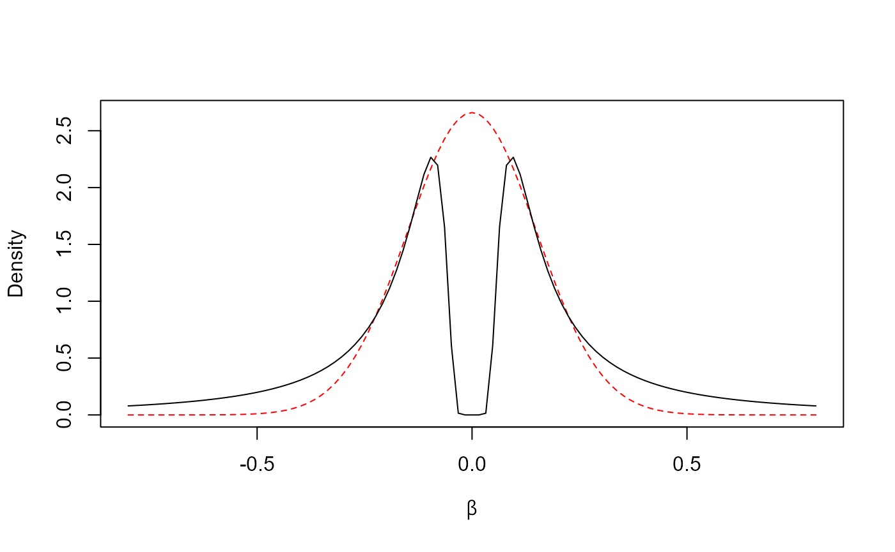

Non-local priors
Ville Karhunen
07.07.2023
nonlocalpriors.Rmd
Non-local densities are a family of probability distributions with zero density at the null parameter value. One of the members of this probability distribution family is a product inverse-moment (piMOM) prior for a parameter vector \(\boldsymbol{\beta} \in \mathbb{R}^d\), with density
\[ f(\boldsymbol{\beta}|\tau, r) = \prod_{k = 1}^d\frac{\tau^{r/2}}{\Gamma(r/2)}|\beta_k|^{-(r+1)}\exp \left( -\frac{\tau}{\beta_k^2} \right), \]
with parameters \(\tau, r > 0\). The parameter \(\tau\) controls the spread of the distribution away from the null value, and \(r\) controls the tail behaviour of the distribution (Johnson, Rossell 2012). Here, we only consider the case of \(r = 1\), which leads to Cauchy-like tails in the distribution.
The choice of \(\tau\) can be set such that \(\mathbb{P}(|\beta| < q_\beta) = q\). For genetic analyses, Sanyal et al. (2019) suggested \(q_\beta = 0.05\) and \(q = 0.01\). We can obtain the corresponding quantile from the relation of the inverse-moment prior with the (inverse) Gamma distribution (Johnson, Rossell 2010):
betaq <- 0.05
q <- 0.01
qgamma(1 - q, shape = 0.5, scale = 1)*betaq^2
#> [1] 0.008293621The marginal density with \(\tau = 0.0083\) is reminiscent of the Gaussian distribution with \(\sigma^2 = 0.15\), suggested by Wakefield (2017) and commonly used as the prior for genetic effects (e.g. Giambartolomei et al. 2014):
curve(dnorm(x, 0, 0.15), -0.8, 0.8,
col = "red", lty = 2,
xlab = bquote(beta), ylab = "Density")
curve(dimom(x, tau = 0.0083, r = 1), lty = 1, add = T)
The key differences between the two distributions are that (i) the non-local prior density approaches 0 when \(|\beta| \rightarrow 0\), and (ii) the tails of the non-local density are thicker. Due to (i), non-local priors apply a strong penalty when any of its components are close to zero, therefore making them suitable for variable selection. As for (ii), the Cauchy-like tails protect from over-shrinkage of true large effects.
References
Giambartolomei et al. (2014). Bayesian Test for Colocalisation between Pairs of Genetic Association Studies Using Summary Statistics. PLoS Genet.
Johnson, Rossell (2010). On the use of non-local prior densities in Bayesian hypothesis tests. J. R. Statist. Soc. B.
Johnson, Rossell (2012). Bayesian Model Selection in High-Dimensional Settings. J Am Stat Assoc.
Sanyal et al. (2019). GWASinlps: non-local prior based iterative SNP selection tool for genome-wide association studies. Bioinformatics.
Wakefield (2009). Bayes factors for genome-wide association studies: comparison with P-values. Genet Epidemiol.
Session information
sessionInfo()
#> R version 4.2.2 (2022-10-31 ucrt)
#> Platform: x86_64-w64-mingw32/x64 (64-bit)
#> Running under: Windows 10 x64 (build 19045)
#>
#> Matrix products: default
#>
#> locale:
#> [1] LC_COLLATE=Finnish_Finland.utf8 LC_CTYPE=Finnish_Finland.utf8
#> [3] LC_MONETARY=Finnish_Finland.utf8 LC_NUMERIC=C
#> [5] LC_TIME=Finnish_Finland.utf8
#>
#> attached base packages:
#> [1] stats graphics grDevices utils datasets methods base
#>
#> other attached packages:
#> [1] finimom_0.0.0.9000
#>
#> loaded via a namespace (and not attached):
#> [1] Rcpp_1.0.10 rstudioapi_0.14 knitr_1.41 magrittr_2.0.3
#> [5] R6_2.5.1 ragg_1.2.5 rlang_1.1.0 fastmap_1.1.0
#> [9] highr_0.10 stringr_1.5.0 tools_4.2.2 xfun_0.36
#> [13] cli_3.5.0 jquerylib_0.1.4 systemfonts_1.0.4 htmltools_0.5.4
#> [17] yaml_2.3.6 digest_0.6.31 rprojroot_2.0.3 lifecycle_1.0.3
#> [21] pkgdown_2.0.7 textshaping_0.3.6 purrr_1.0.1 sass_0.4.4
#> [25] vctrs_0.6.1 fs_1.5.2 memoise_2.0.1 glue_1.6.2
#> [29] cachem_1.0.6 evaluate_0.19 rmarkdown_2.19 stringi_1.7.8
#> [33] compiler_4.2.2 bslib_0.4.2 desc_1.4.2 jsonlite_1.8.4